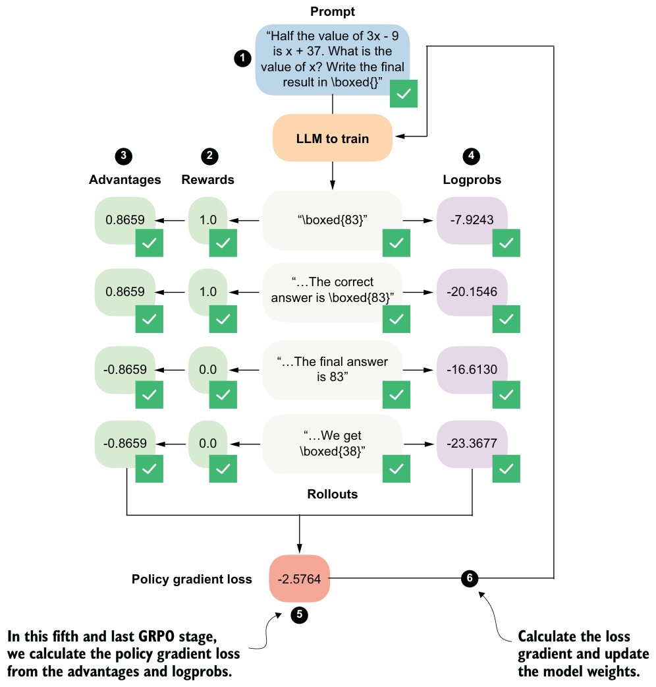
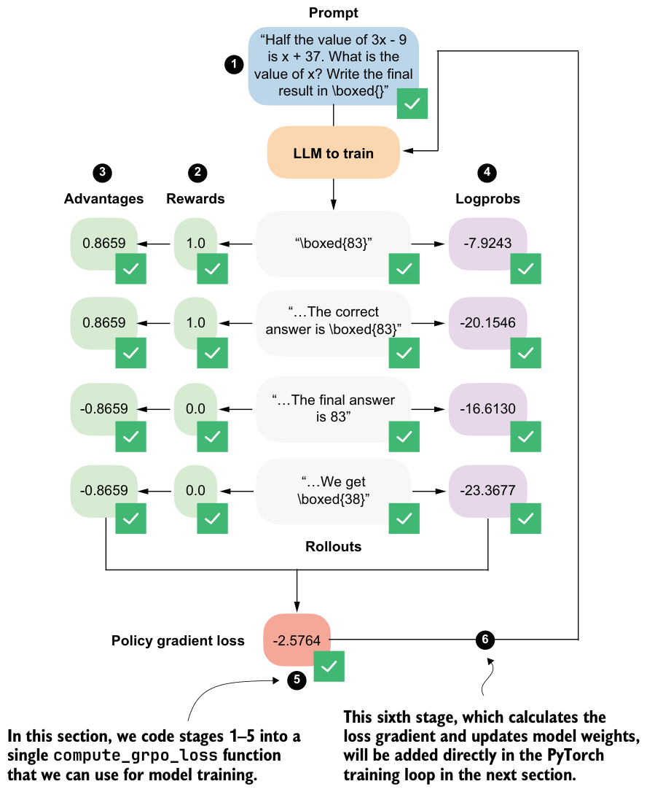

6.9From advantages to policy updates via the GRPO loss
We’ll now implement the fifth stage of the GRPO pipeline, where the previously computed advantages and logprobs are combined into a policy gradient loss. We’ll implement the subsequent weight update (stage 6) later as part of the training loop, as shown in figure 6.17.
First, we’ll convert the list of rollout logprobs from the previous section into a PyTorch tensor. Then, we’ll compute the policy gradient loss by multiplying each rollout’s sequence-level logprob by its corresponding advantage, taking the mean across rollouts, and applying a negative sign. Because PyTorch optimizers are defined to minimize a loss, objectives that are naturally written as maximization problems must be sign-flipped.
logps = torch.stack(rollout_logps)
pg_loss =-(advantages.detach() * logps).mean()print(logps)
print(pg_loss)
This prints the following for the logprobs:
tensor([
-7.9243, -20.1546, -16.6130, -23.3677],
grad_fn=<StackBackward0>)The resulting policy gradient loss value is as follows:
tensor(-2.5764, grad_fn=<NegBackward0>)Note that we use .detach() on the advantages because they are treated as fixed learning signals during the policy update. This prevents gradients from flowing back through the advantage computation, ensuring that only the model parameters influencing the logprobs are updated.
In policy gradient methods, we want to maximize the advantage-weighted logprob of the rollouts, since higher log probabilities for high-advantage rollouts improve the policy. By multiplying this objective by −1, we convert the maximization problem into an equivalent minimization problem. Minimizing the negative objective produces the exact same parameter updates as maximizing the original one, while remaining compatible with PyTorch’s optimizer implementations.
Maximization vs. minimization
Mathematical definition of the policy gradient loss
- 𝑦𝑡
- N denotes the number of rollouts.
- 𝑦<𝑡
- 𝑥(𝑖) is the corresponding input prompt.
- 𝐴𝑖 is the advantage of the full rollout.
6.10Putting everything together in a single GRPO function
We have now completed the most challenging parts of this chapter and walked through each GRPO stage in isolation. Next, we’ll combine the five GRPO stages shown in figure 6.18 into a single compute_grpo_loss function, which we’ll later use as part of the full training loop. (Note that the term “stage” here refers to a conceptual component of the GRPO loss computation, based on how we stepped through the GRPO algorithm; it’s not a training step in the outer optimization loop.)
single compute_grpo_loss function
The compute_grpo_loss function, which combines all the stages from figure 6.18 that we discussed previously, is shown in the following listing.
def compute_grpo_loss(
model,
tokenizer,
example,
device,
num_rollouts=2,
max_new_tokens=256,
temperature=0.8,
top_p=0.9,
):
assert num_rollouts >= 2
roll_logps, roll_rewards, samples = [], [], []
prompt = render_prompt(example["problem"])
was_training = model.training
model.eval()
for _ in range(num_rollouts):
token_ids, prompt_len, text = sample_response(
model=model,
tokenizer=tokenizer,
prompt=prompt,
device=device,
max_new_tokens=max_new_tokens,
temperature=temperature,
top_p=top_p,
)
reward = reward_rlvr(text, example["answer"])
logp = sequence_logprob(model, token_ids, prompt_len)
roll_logps.append(logp)
roll_rewards.append(reward)
samples.append(
{
"text": text,
"reward": reward,
"gen_len": token_ids.numel() - prompt_len,
}
)
if was_training:
model.train()
rewards = torch.tensor(roll_rewards, device=device)
advantages = (rewards - rewards.mean()) / (rewards.std() + 1e-4)
logps = torch.stack(roll_logps) pg_loss = -(advantages.detach() * logps).mean()
loss = pg_loss # In the next chapter we add a KL term here
return {
"loss": loss.item(),
"pg_loss": pg_loss.item(),
"rewards": roll_rewards,
"advantages": advantages.detach().cpu().tolist(),
"samples": samples,
"loss_tensor": loss,
}The compute_grpo_loss function is relatively self-explanatory because it follows the same stages we implemented manually in the previous sections. Note, though, that after stage 1, the code proceeds directly to stages 2 and 4 rather than stages 3 and 4. This is purely an implementation choice that simplifies the code structure by avoiding multiple nested for loops while preserving the same logical sequence of operations.
Also note that the pg_loss (policy gradient loss) is identical to the overall loss in our examples. I intentionally omitted the KL loss term here; we’ll add it in chapter 7 for completeness. As discussed earlier, GRPO is often reported to perform better on math problems when the KL loss term is omitted, which is why we are adopting this simplified objective here.
Next, let’s try the new compute_grpo_loss function on an example from the MATH training dataset to ensure that it works. We’ll only sample a small number of rollouts (num_rollouts=2) and generate a relatively small number of tokens (max_new_ tokens=256) for testing purposes. It may still take several seconds for the function to return the results.
torch.manual_seed(123)
stats = compute_grpo_loss(
model=model,
tokenizer=tokenizer,
example=math_train[4],
device=device,
num_rollouts=2,
max_new_tokens=256,
temperature=0.8,
top_p=0.9
)
pprint(stats)The output is as follows:
{'advantages': [0.0, 0.0],
'loss': -0.0,
'loss_tensor': tensor(-0., grad_fn=<NegBackward0>),
'pg_loss': -0.0,
'rewards': [0.0, 0.0],
'samples': [{'gen_len': 4, 'reward': 0.0, 'text': ' 14<|endoftext|>'},
{'gen_len': 256,
'reward': 0.0,
'text': ' 4\n'
'To solve the problem, let's break it down step by step'
'...'}As you can see from the 'rewards' and 'text' entries in the 'samples' field, the model answers incorrectly. As discussed in section 6.4, a correct answer must include \boxed{6}. Since this condition is not met, the reward is zero, which in turn yields zero advantages and a zero loss. In this case, if we were training the model, the gradient would be zero and the model parameters would not be updated.